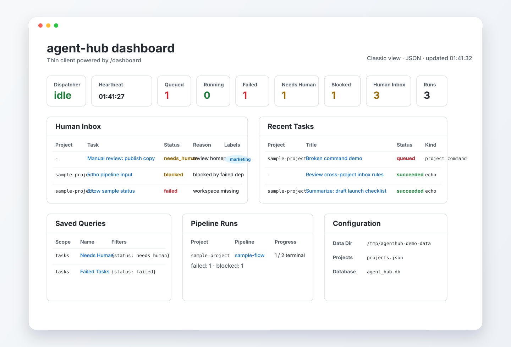
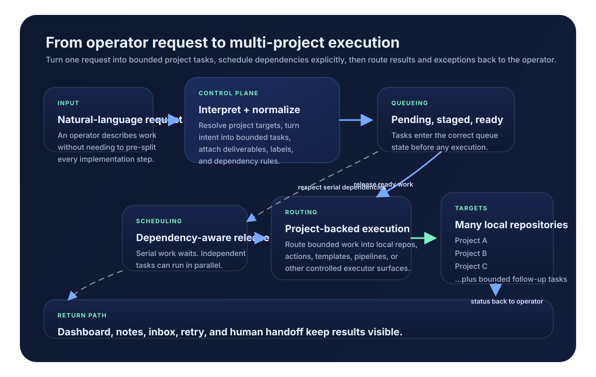
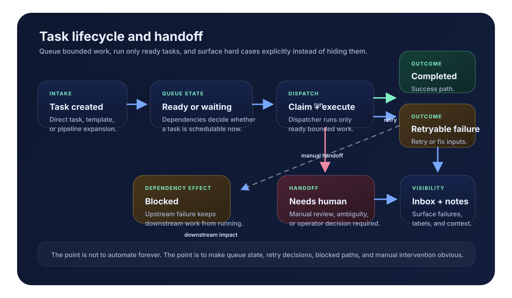

可持久化的助手任务生命周期
基于 SQLite 保存助手任务、依赖边、重试、取消、阻塞传播和运行历史。
当前版本聚焦在真正必要的基础层：可持久化队列状态、依赖处理、项目路由，以及轻量操作者可视化。
基于 SQLite 保存助手任务、依赖边、重试、取消、阻塞传播和运行历史。
把编码工作路由到可复用的项目级助手命令，并实例化有边界的多步流程。
可以通过 CLI、JSON 接口、静态 HTML 页面和 /app 浏览器应用来观察系统。
显式暴露 needs_human、备注和标签，避免未解决问题消失在自动化里。
可以把任务或流水线筛选条件保存下来，之后从 CLI 或 HTTP 反复执行。
保持仓库易于审计，同时给执行器、策略和集成预留清晰扩展空间。
| 核心定位 | 一个给代码助手使用的多任务看板，面向多个本地仓库工作。 |
|---|---|
| 主要用户 | 一个希望通过单一助手入口管理多个编码任务的操作者。 |
| 主要目标 | 通过受控 wrapper 启动的仓库内工具，例如 Codex、Claude Code、Kimi Code、Qwen Code。 |
| 主要价值 | 任务排队、路由、依赖控制、重试、阻塞可视化，以及人工交接。 |
| 交互方式 | 你主要和代码助手对话，助手再通过这个看板创建和检查任务。 |
同一套系统可通过脚本、HTTP 和轻量浏览器界面访问。你可以按任务选择入口，而不必改变底层队列模型。
可以从脚本或 shell 中创建任务、运行模板、调度队列、查看 inbox 状态和导出快照。
通过轻量 JSON 接口完成任务创建、查询、inbox 查看、pipeline 运行和 dashboard 快照。
使用 HTML 页面和浏览器应用进行轻量分诊、状态观察和人工介入，而不需要重型前端。
基于真实 /app 布局做的高保真静态预览，填充了代表性的队列、inbox、pipeline 和保存视图数据。

当一个操作者需要用一个控制面同时管理多个本地 repo 和有边界的代码助手任务时，`agent-hub` 最合适。
接受自然语言意图，映射到目标项目，并启动一个带明确交付物的有边界助手任务。
当某项任务必须等待时显式建模依赖，同时允许无关工作并行执行。
能自动跑的尽量自动跑，遇到棘手案例时清楚停下并进入人工审查。
当前最自然的使用方式，是把 agent-hub 放在你已有的仓库内代码助手前面，作为多任务看板，而不是试图替代它们。
把 agent-hub 作为队列、路由、依赖和可视化层，让操作者直接面向它工作。
让 Claude Code、Codex、Kimi Code、Qwen Code 继续待在目标 repo 中，通过 wrapper 或本地命令入口运行。
把 repo-助手组合注册成项目，再创建任务或模板，把自然语言提示词转发到这些本地执行器。
这就是当前公开版 MVP 最自然的定位：一个操作者入口、多个本地 repo、显式依赖，以及通过受控本地命令启动的代码助手。
控制面的价值不只是执行，更在于“归一化”这一步：把模糊的编码需求转成明确项目目标、有边界的助手任务，以及依赖感知调度。

系统刻意把流程做小：定义任务、只调度 ready 任务、再把异常显式抛给操作者处理。
直接排队一个任务，或从项目注册表中实例化任务模板与 pipeline。
dispatcher 只领取 ready 任务，并在执行前严格检查依赖完成情况。
通过快照、标签、备注和 human inbox 来重试、取消或把工作交还给人。

启动网页服务，运行 dispatcher，通过仓库内 wrapper 排队助手任务，然后打开 dashboard 和浏览器应用。
python -m agent_hub --projects-file examples/agent-driven-projects.example.json serve --port 8080
python -m agent_hub --projects-file examples/agent-driven-projects.example.json dispatch
python -m agent_hub --projects-file examples/agent-driven-projects.example.json run-task-template demo-codex delegate-task --input "Investigate why the local build script is flaky"
python -m agent_hub --projects-file examples/agent-driven-projects.example.json run-pipeline demo-codex review-then-implement --input "Add a dry-run mode"
python -m agent_hub --projects-file examples/agent-driven-projects.example.json list-human-inbox
python -m agent_hub --projects-file examples/agent-driven-projects.example.json dashboard一个把有边界助手任务路由到仓库内 wrapper 的看板，以及 human inbox、保存视图和只读 dashboard 快照。
不是托管 SaaS，不是多租户引擎，也不是精修过的生产级 UI。它的目标是一个小而可扩展的 OSS 基线。
使用浏览器友好的 demo 页面，查看完整的本地逐步流程。
先看仓库，再看发布页和 demo 页面，就能理解当前这个 MVP 的边界。
当你今天就想要显式的代码助手路由和操作者可视化，同时又希望后面还能逐步长成更严格策略与更丰富集成时，`agent-hub` 就有价值。
{kind=link}